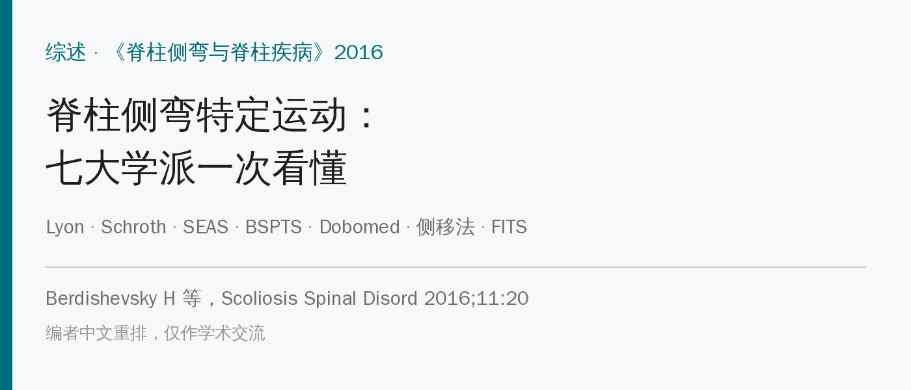
🔖原文信息（编者中文重排）
📚 文献信息
▪ Berdishevsky H, Lebel VA, Bettany-Saltikov J, Rigo M, Lebel A, Hennes A, Romano M, Białek M, M'hango A, Betts T, de Mauroy JC, Durmala J. Physiotherapy scoliosis-specific exercises – a comprehensive review of seven major schools. Scoliosis Spinal Disord. 2016;11:20.
▪ 作者为七个学派的代表人物（法国、德国、意大利、西班牙、波兰、英国），第一作者来自美国哥伦比亚大学医学中心
▪ 叙述性综述，原文 52 页、97 张图；DOI：10.1186/s13013-016-0076-9
青少年特发性脊柱侧弯 10°～25° 时，很多医生的做法是“观察等待”。家长不满意，治疗师也想做点什么。国际脊柱侧弯矫形与康复治疗学会（SOSORT）把有针对性的运动统称为脊柱侧弯特定物理治疗运动（PSSE）。
这篇综述请七个学派各自的代表人物，按统一框架介绍自己：历史、分型、矫正原则、呼吸与肌肉激活、代表练习、日常生活、证据和配套支具。作者强调：目的不是比出谁最好，而是让治疗师从每家学派里各取所长。
PSSE 的定位：不是替代支具或手术，而是可以单独用、也可以和支具、手术配合的治疗手段。轻度、进展性不明显的侧弯规律练习，Cobb 角可能暂时减小；还能改善背部不对称、肌肉失衡和疼痛，重度胸弯可改善呼吸功能。
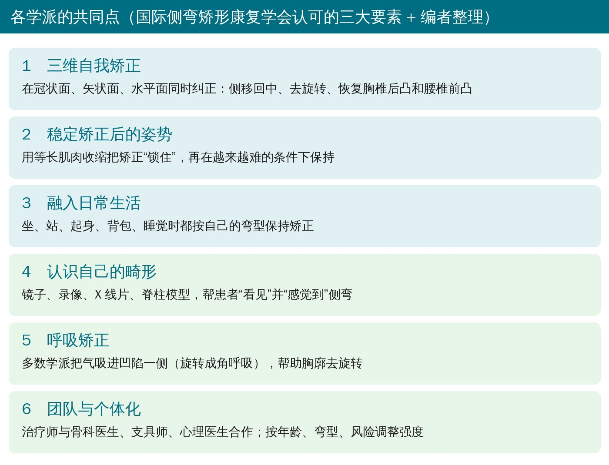
🔖各学派的共同点
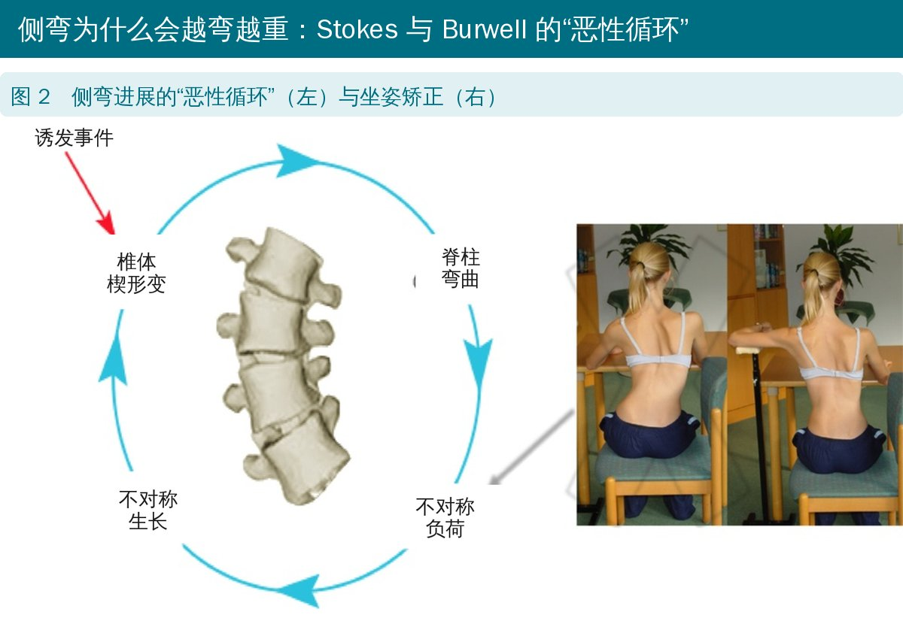
🔖侧弯进展的恶性循环
为什么运动可能有用：Stokes 和 Burwell 提出，某个诱发事件让椎体楔形变 → 脊柱弯曲 → 不对称负荷 → 不对称生长 → 楔形变加重，形成恶性循环。PSSE 想做的就是通过宣教和姿势矫正，减少不对称负荷，打断这个循环。
| 学派 | 国家 / 创立 | 核心思路 | 分型 | 呼吸 | 配套支具 |
|---|---|---|---|---|---|
| Lyon | 法国，约 200 年前起源 | 以石膏和支具为主，运动为支具做准备 | Ponseti（运动）、Lenke（支具） | 旋转成角呼吸 + 呼吸训练器 | ARTbrace |
| Schroth | 德国，1921 | 凸侧等长收缩“压回去”，凹侧呼吸“撑起来” | Schroth 体块 | 旋转成角呼吸 | Chêneau |
| SEAS | 意大利，20 世纪 60 年代 | 不借助外物的主动自我矫正，融入功能练习 | Ponseti | 旋转成角呼吸 | Sibilla、Sforzesco |
| BSPTS | 西班牙，1968 | 源自 Schroth，加入 Rigo 分型和矫正原则 | Schroth 体块 + Rigo 影像学分型 | 旋转成角呼吸 | Rigo-Chêneau |
| Dobomed | 波兰，1979 | 对称体位、闭链下的胸椎后凸化 + 三维矫正 | 自有分型 | “相锁”呼吸 | Chêneau |
| 侧移法 | 英国，1984 | 躯干向凹侧侧移，重复动作引导生长方向 | King + 侧移柔韧性分型 | 旋转成角呼吸 | 未指定 |
| FITS | 波兰，2004 | 博采众长（PNF、筋膜技术等），完全个体化 | 无传统分型 | 向凹侧三维矫正呼吸 | Chêneau |
按原文表 1 整理。七个学派都以 SOSORT 2011 指南作为治疗指征。
法国最古老的物理治疗学派之一，1947 年 Stagnara 设计了里昂支具。核心是石膏和支具，运动是辅助——负责人 de Mauroy 自己说，与其叫“里昂方法”，不如叫“里昂经验”。
• 侧弯分两类：<20° 的“混沌型”（约 2.5% 青少年，进展不可预测）与 >20° 的“线性型”（约 0.25%，进入恶性循环）
• 五个阶段：评估（年龄、姿势失衡、Cobb 角）→ 认识畸形（镜子、录像）→ 该做什么 → 不该做什么 → 运动指导
• 该做：避免脊柱后伸，促进胸椎后凸、腰椎前凸，冠状面矫正、节段松动、核心稳定、本体感觉和平衡
• 不该做：矢状面极限屈伸、让人上气不接下气的练习
• 代表动作：仰卧垫枕促后凸；胎儿位滚动、瑞士球上后凸位去旋转；坐位调整腰椎前凸、球上松动；站立位练习
• 年龄差异：15～17 岁以下不做牵伸；青少年做全套；成人以减痛、保护椎间盘为主
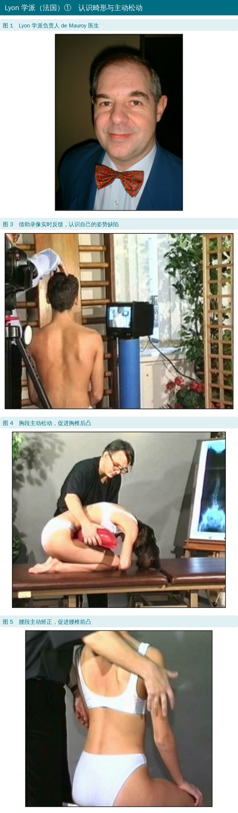
🔖认识畸形与主动松动
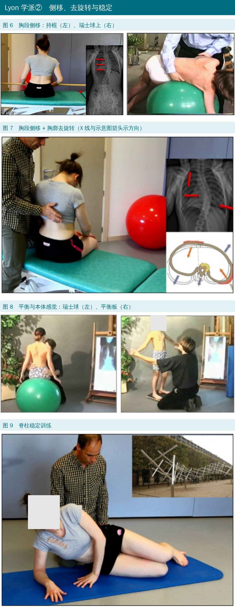
🔖侧移、去旋转与稳定
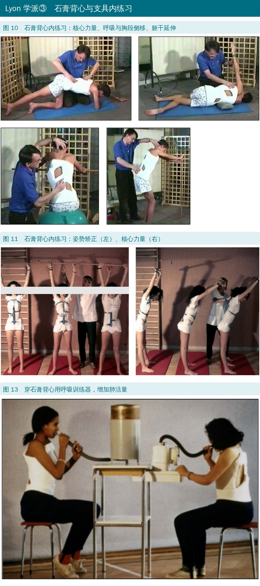
🔖石膏背心与支具内练习
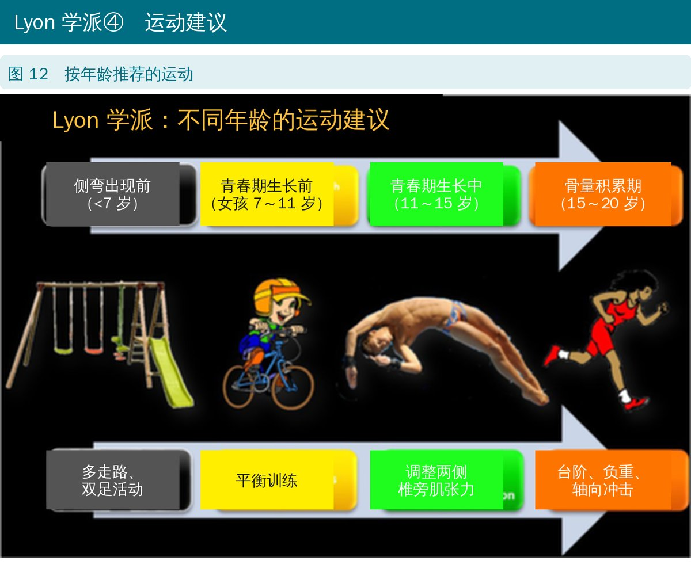
🔖按年龄的运动建议
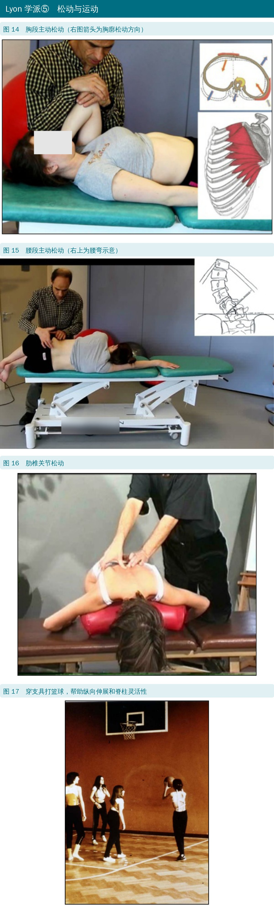
🔖松动与运动
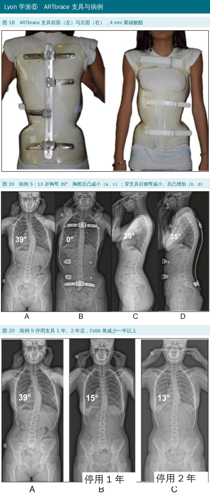
🔖ARTbrace 支具与病例
ARTbrace：4 mm 聚碳酸酯非对称硬支具，两片侧壳铰接在后方金属杆上，以整体“去扭转”代替多个三点力系统。
1910 年前后，自己患侧弯的 Katharina Schroth 受吹气球启发，对着镜子把气吸进躯干凹陷处，1921 年开始治疗他人。今天的 Asklepios Schroth 诊所可容纳 200 名住院患者，全球约 2500 名认证治疗师。
• 体块分型：把躯干看成 4 个“体块”——肩带块 S、胸段块 T、腰段块 L、髋-骨盆块 H。侧弯时体块从矩形变成梯形，并发生侧移和旋转
• 分型：胸弯为主（单纯胸弯；伴对侧腰弯、髋居中；伴腰弯和髋向对侧突出）、腰弯为主（三种类似亚型），以及矢状面畸形
• 矫正顺序：先做 5 个骨盆矫正，再做 5 个主要原则：① 自我延伸 ② 侧向矫正 ③ 去旋转 ④ 旋转成角呼吸 ⑤ 稳定
• 方法：凸起部位等长收缩“向前、向内”收回，凹陷部位用呼吸“向外、向后”撑开；练习前先做脊柱和肋间松动；重点激活髂腰肌、腰方肌、竖脊肌
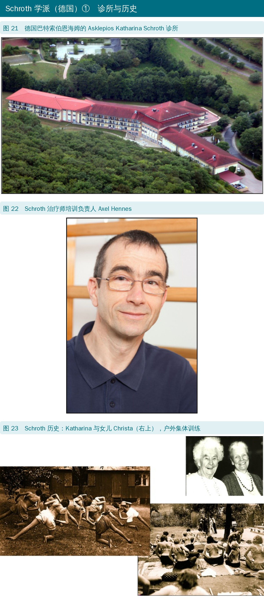
🔖诊所与历史
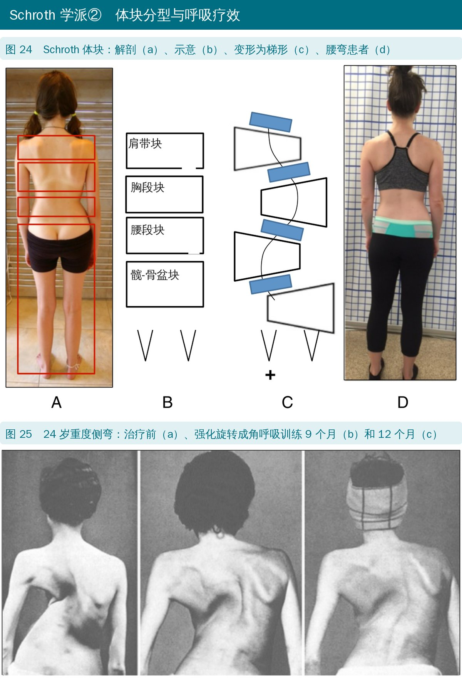
🔖体块分型与呼吸疗效
• “50 次瑞士球”：坐瑞士球、对着镜子，扶肋木做主动三维自我矫正，凸侧“向前向内”、凹侧“向外向后”
• 俯卧练习：肩部牵引/反牵引矫正胸弯，屈髋激活髂腰肌矫正腰弯
• “帆”：站在半圆泡沫轴上、双手持两根杆，扩张凹陷一侧胸廓，非常有效的牵伸
• “肌肉圆柱”：侧卧在腰凸侧，抗重力激活腰方肌矫正腰弯（高阶）
• 日常生活中的坐、站、躺姿矫正，减少每天“高强度练习”的时间
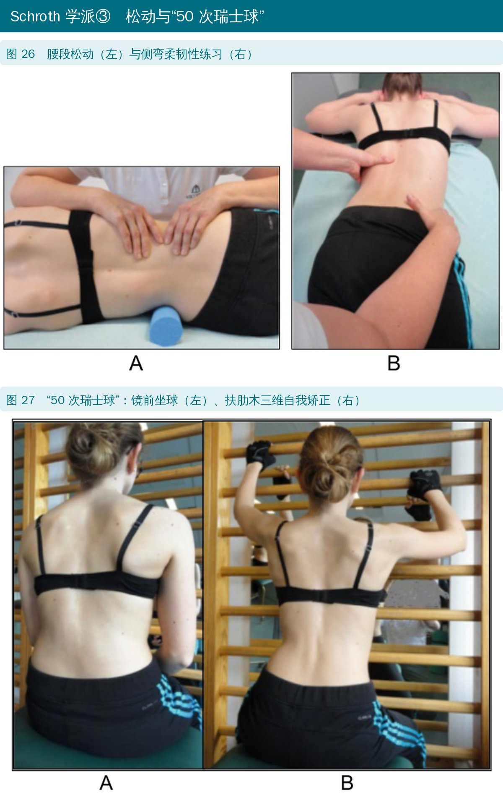
🔖松动与“50 次瑞士球”
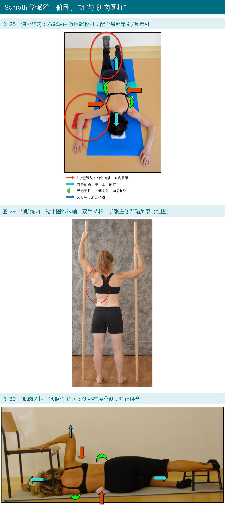
🔖俯卧、“帆”与“肌肉圆柱”
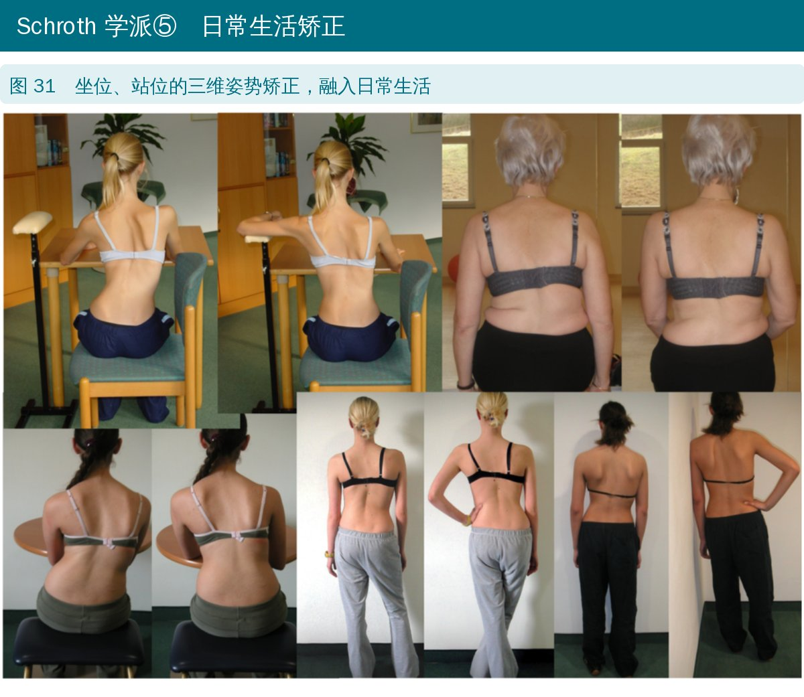
🔖日常生活矫正
证据：Schroth 是研究最多的方法之一。Kuru 等的随机对照试验发现门诊监督下练习优于单纯居家练习，Cobb 角、生活质量、躯干旋转都更好；Schreiber 等的随机对照试验显示自我形象和生活质量改善。
源自 Lyon，由 Negrini 夫妇在 20 世纪 60 年代创办，2002 年成立意大利脊柱科学研究所（ISICO）。特点是不借助任何外物的主动自我矫正，并把它融入各种功能练习，让矫正最终变成下意识的反射。
• 频率：门诊每周 2～3 次、每次 45 分钟；或每天在家 20 分钟 + 每 3 个月 1.5 小时专业评估调整
• 支具前：松动增加活动度，让支具发挥最大矫正；支具内：主动“离开”压垫加大矫正力（如俯卧抬胸离开胸骨垫增加后凸、站立收腹加大腰垫压力），耐力训练；停支具时：减少矫正丢失
• 没有“最好的一个动作”：根据 X 线和姿势评估选个体化的自我矫正方向，宁可简单做对，再逐步加难
• 成人：目标不是减小角度，而是稳定脊柱、防止进展
SEAS 自我矫正的四个自问
• ① 我的脊柱是“撑住”而不是松垮的吗？（先在镜前，后脱离镜子）
• ② 我的身体比刚才更对称了吗？（先看，后靠感觉）
• ③ 做动作时我还能保持矫正吗？（能 → 加难；不能 → 降难）
• ④ 我能感觉到身体回到原来的位置吗？保持约 10 秒后慢慢放松，答“是”才说明刚才真的矫正了
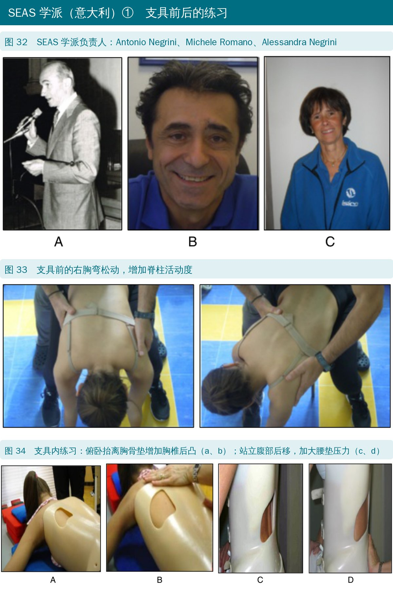
🔖支具前后的练习
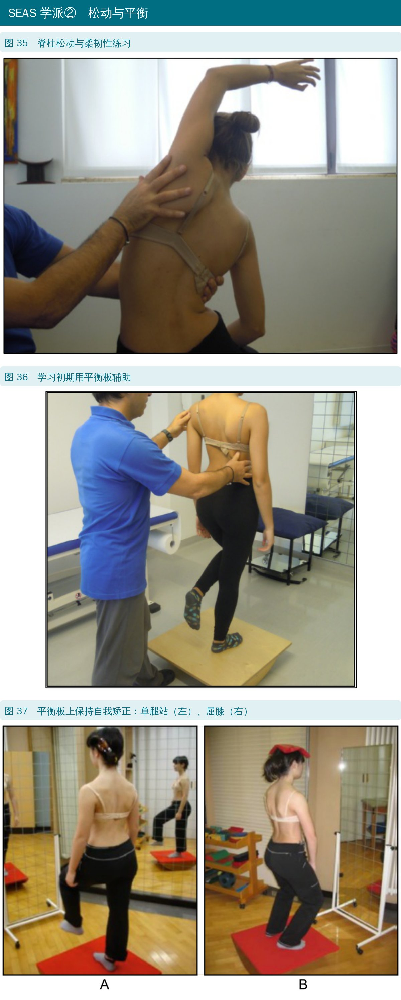
🔖松动与平衡
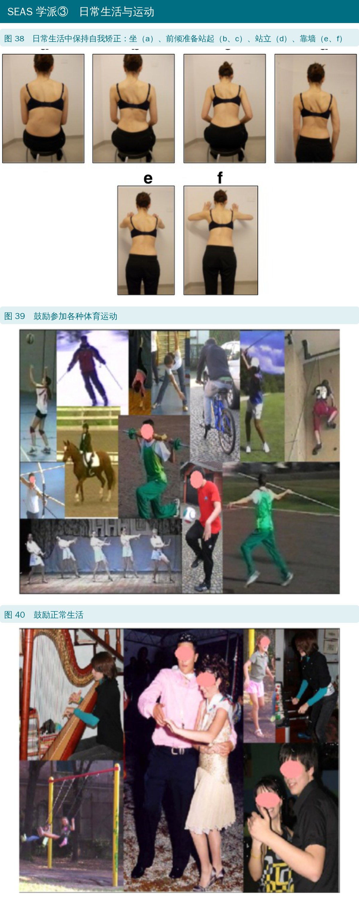
🔖日常生活与运动
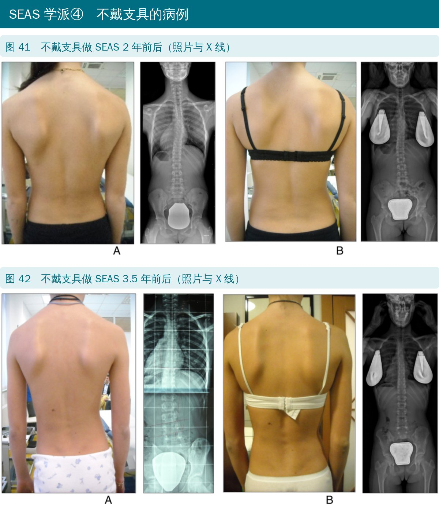
🔖不戴支具的病例
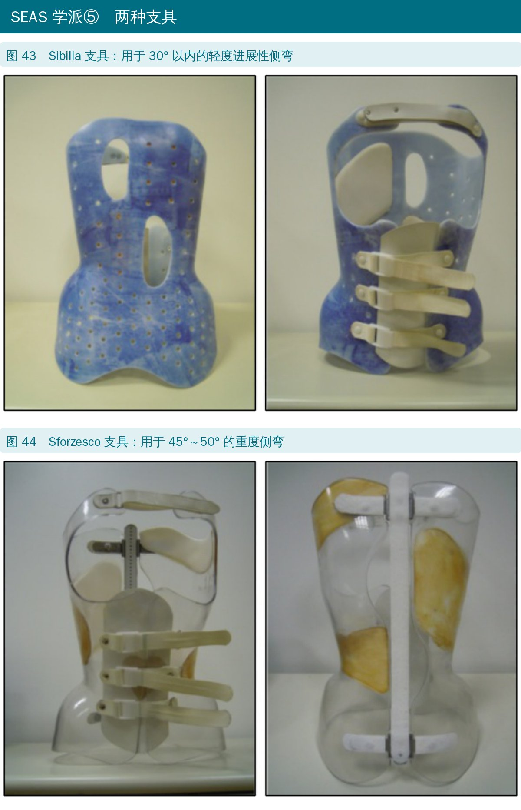
🔖两种支具
• Sibilla 支具：较软，用于 30° 以内、运动控制不住的轻度进展性侧弯，每天 18～20 小时到 Risser 3 级
• Sforzesco 支具：最硬，用于 45°～50° 的重度侧弯；全天佩戴至少 1 年，之后每 6 个月减 1～2 小时，到 Risser 3 级仍可能需每天 18 小时
1968 年 Elena Salvá 从德国学成 Schroth 后创立，1989 年起由女儿 Gloria Quera-Salvá 和 Manuel Rigo 培训治疗师，2009 年形成自己的 BSPTS 方法。它保留 Schroth 原则，加入了Rigo 分型，并与 Rigo-Chêneau 支具配套。
• 临床分型：第 1 组为矢状面畸形；第 2 组为胸弯，分3C（胸弯 + 腰椎与骨盆一起向对侧移）、4C（腰弯为主、骨盆向腰弯对侧移）、N3N4（骨盆居中）；第 1-2 组为单纯腰弯/胸腰弯
• 影像学分型：A1～A3、B1～B2、C1～C2、E1～E2，近端胸弯为 D 修饰，用来校验临床分型、指导支具设计
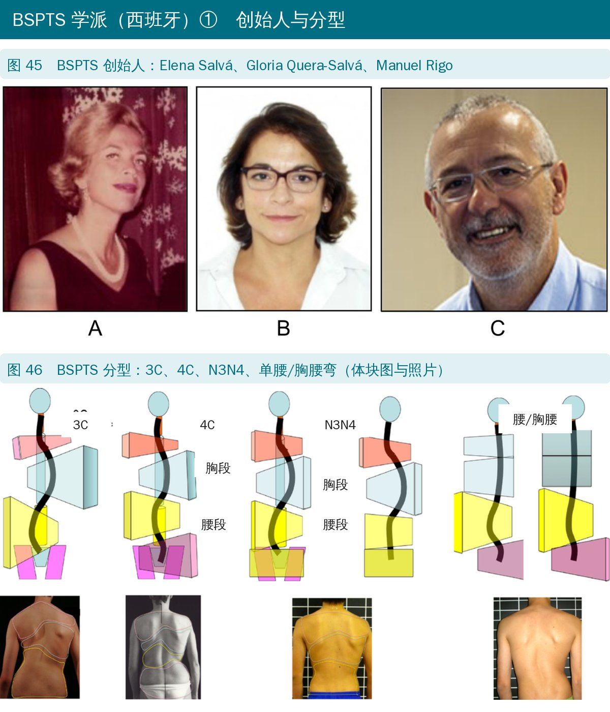
🔖创始人与分型
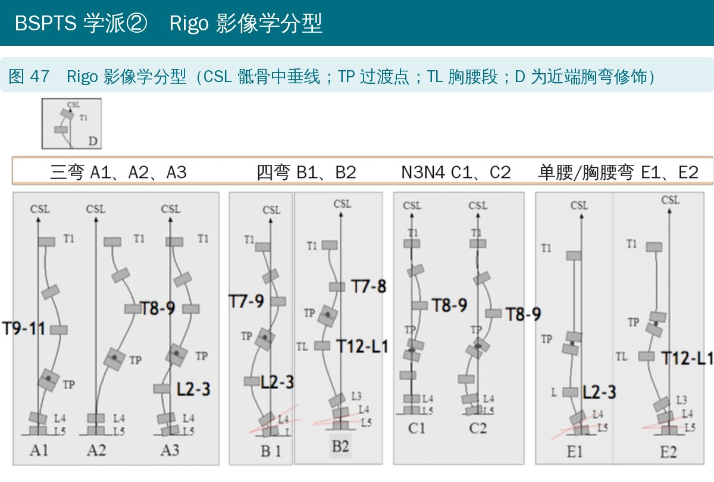
🔖Rigo 影像学分型
BSPTS 四条矫正原则
• ① 三维姿势矫正：按体块做平移、旋转和矢状面扩张——即侧向矫正、去旋转、矢状面正常化
• ② 扩张/收缩技术：只用肌肉力量（不靠呼吸）从内部扩张塌陷区、收缩凸起区，为后面的旋转矫正呼吸打基础
• ③ 肌肉张力稳定：达到最佳矫正后，用等长收缩“锁住”
• ④ 整合：放松时仍保持矫正，对比“侧弯姿势—自我矫正—最佳矫正”的差别（镜子/摄像），再带进日常生活
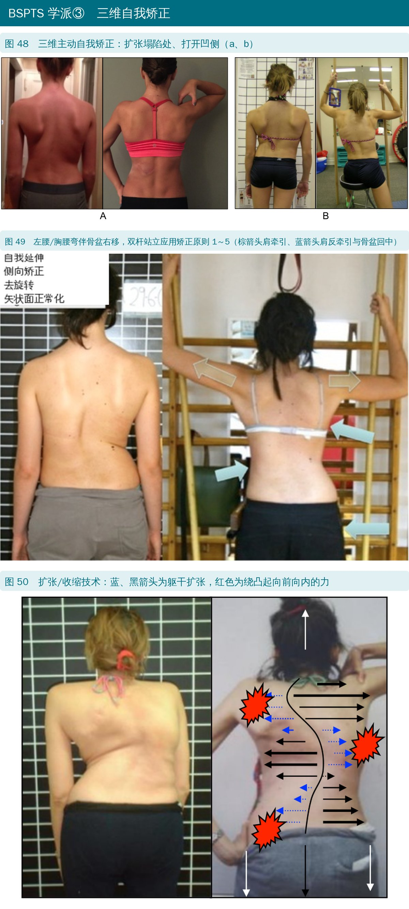
🔖三维自我矫正
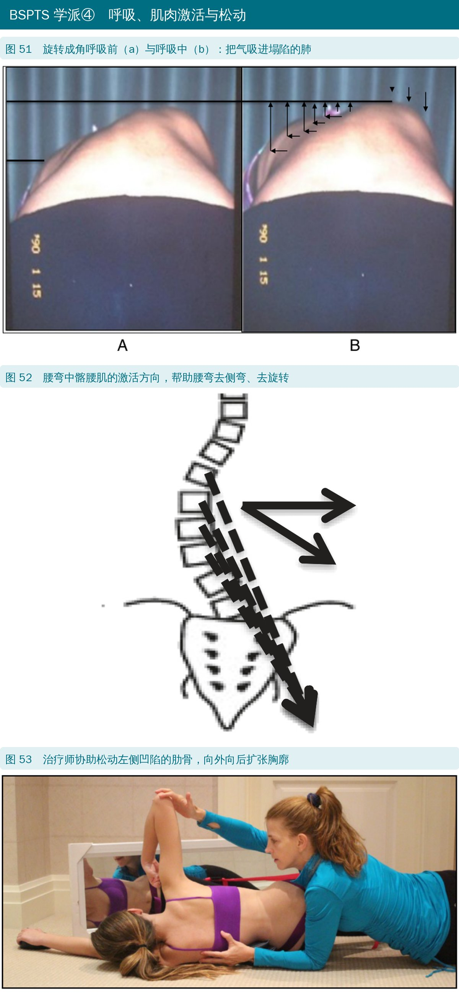
🔖呼吸、肌肉激活与松动
• 仰卧：去除重力影响，精确地做小幅矫正
• 侧卧：最适合冠状面矫正；腰凹侧朝上可抗重力激活
• 俯卧（凳上）：塌陷的背部抗重力用力，凸起朝下处于去重力位
• “肌肉圆柱”：高阶，主要用于 4C 型腰弯
• 学习量：小组 60 小时 + 个人 20 小时可达较高水平；小组约 9 小时后就能在家开始练
• 常用器材：肋木、垫子、杆、带子、镜子、弹力带、棍、球、瑜伽砖、凳子、泡沫轴
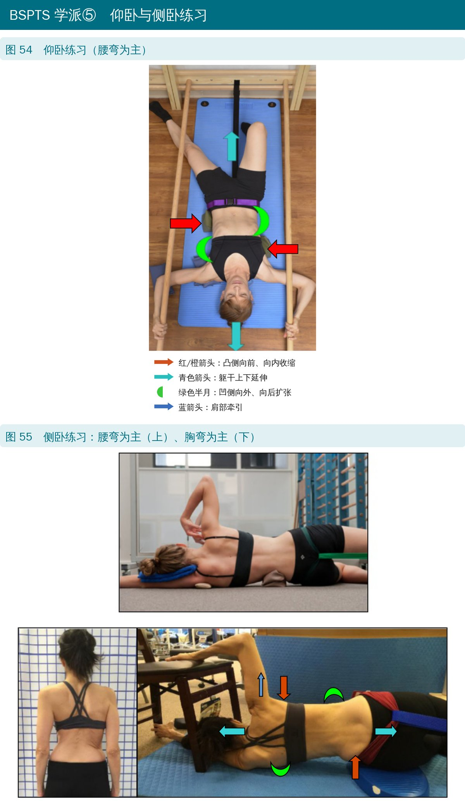
🔖仰卧与侧卧练习
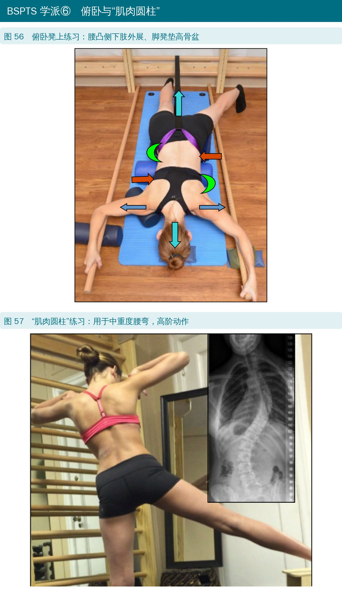
🔖俯卧与“肌肉圆柱”
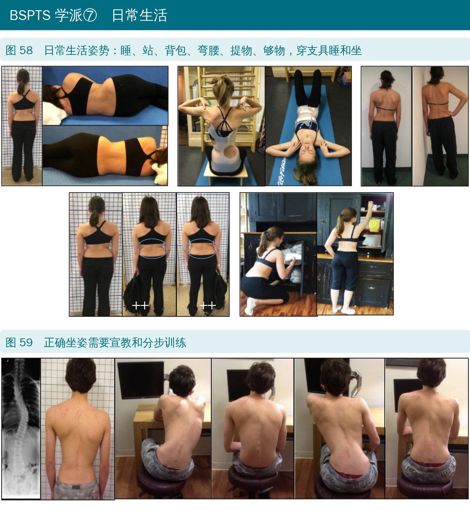
🔖日常生活
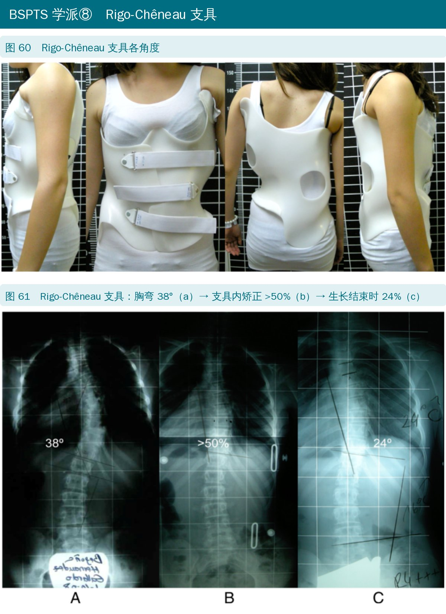
🔖Rigo-Chêneau 支具
Rigo-Chêneau：非对称硬支具，石膏模型上设计接触区和对应的扩张区，结合三点力、区域去旋转和矢状面平衡；没有“夹心”压迫，让呼吸和生长帮着矫正。
1979 年由 Krystyna Dobosiewicz 教授创立，融合了 Klapp 的胸椎后凸化体位和 Lehnert-Schroth 的非对称呼吸。最大特点：骨盆和肩带先摆对称、固定住，再在闭链下做非对称的三维矫正——胸弯不需要侧屈，矢状面和水平面矫正好了，冠状面会自动跟着改善。
• “相锁”呼吸：吸气时在凹侧施加较强的局部压力，呼气时在凸侧轻轻辅助；呼气时躯干肌等长收缩，稳定矫正或过度矫正
• 三部分：① 前屈位（主要矫正技术，四肢固定骨盆和肩带）② 低位预备练习，中间穿插“休息”动作（最大胸椎后凸 + 腰椎前凸，同时保持三维矫正）③ “高位”直立练习，从坐到跪再到站
• 要求患者能理解并配合，小龄儿童不推荐；年龄大的以稳定为主
• 证据：短期 Dobomed 练习改善呼吸功能优于其他方法，能让伴平背的侧弯重建胸椎后凸
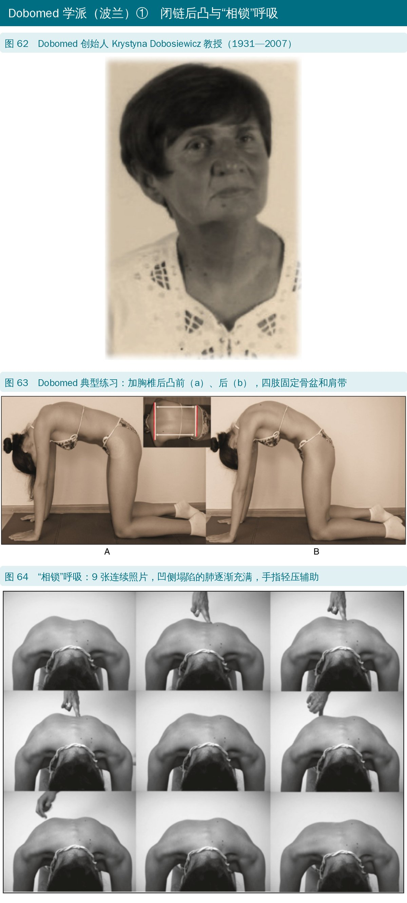
🔖闭链后凸与“相锁”呼吸
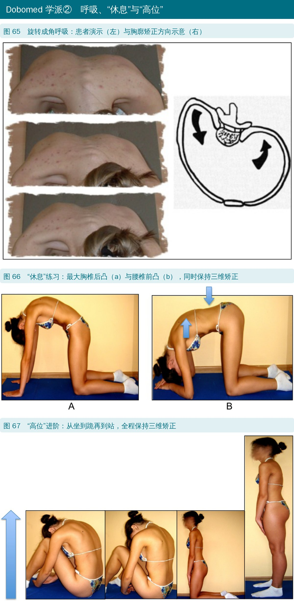
🔖呼吸、“休息”与“高位”
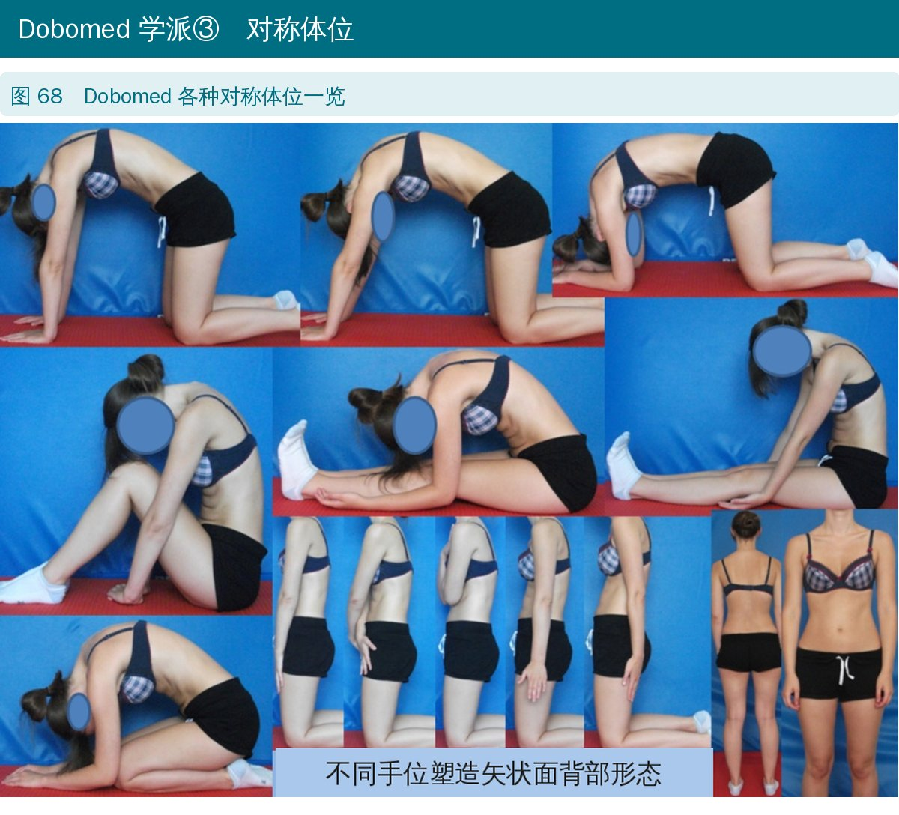
🔖对称体位一览
1984 年 Min Mehta 医生提出，用于英国皇家国家骨科医院。理论是：柔韧的弯可以用侧向运动稳定，反复的侧移能引导生长方向。
• 分型（按柔韧性）：Ⅰ型能侧移越过中线（很柔软）；Ⅱ型能回到中线、部分去旋转；Ⅲ型回不到中线、不去旋转（僵硬）
• 提踵（腰弯/胸腰弯）：站立，提起凸侧脚跟、髋膝伸直，保持 10 秒，每天至少 30 次——凸侧骨盆抬高，腰线不对称改善
• 提踵-侧移（双弯）：先提踵，再用手固定下方弯，躯干向上方胸弯的凹侧移，保持 10 秒，每天至少 30 次
• 侧移：坐或站，躯干离开凸侧移动并保持 10 秒；进阶为保持侧移从坐到站、站在不稳定面上
• 辅助：平板、鸟狗做等长稳定；Maitland 关节松动、筋膜放松；口诀“想着侧移”融入日常
• 青少年可侧移越过中线（不痛为限）；成人移到中线或无痛位即可，配合针灸、经皮电刺激等止痛
制定方案前要回答的 6 个问题
• ① 哪个弯最重要？（Cobb 角、旋转） ② 需要侧移吗？（肋骨悬垂、铅垂线） ③ 需要延伸吗？（矢状面铅垂线、含胸）
• ④ 需要去旋转吗？（剃刀背/躯干旋转角） ⑤ 需要加前凸/后凸吗？ ⑥ 哪个动作最容易做对、记住？（在家只做门诊能准确重复的动作）
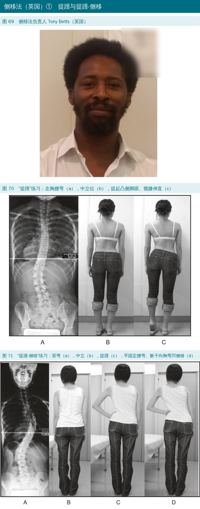
🔖提踵与提踵-侧移
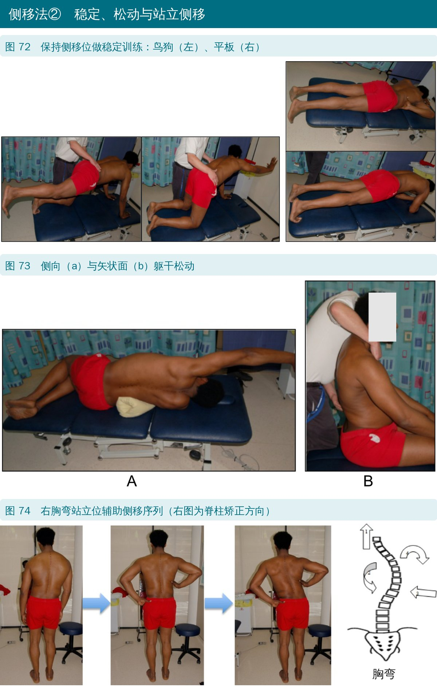
🔖稳定、松动与站立侧移
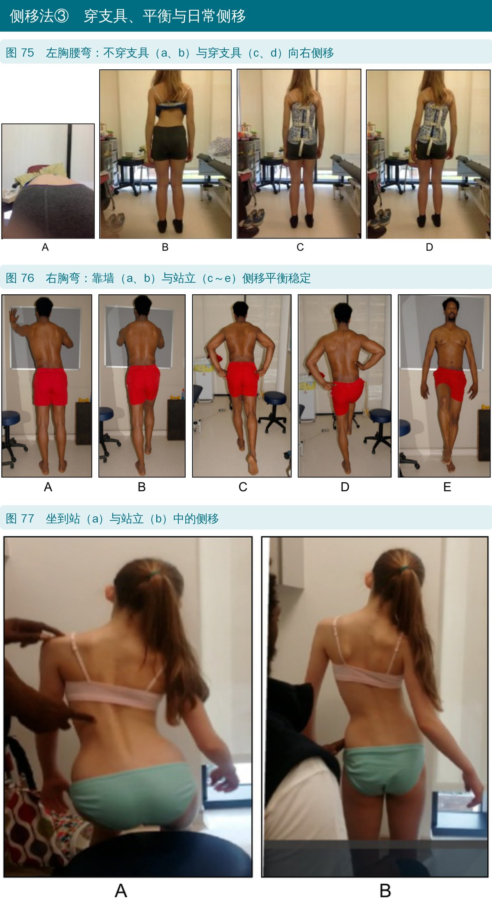
🔖穿支具、平衡与日常侧移
2004 年由 Marianna Białek 和 Andrzej M’hango 创立，最早源自“侧弯中的 PNF”课程。没有传统分型，按每个人的弯数、位置、角度、肩胛和骨盆位置、肌张力、呼吸模式、稳定性和心理状态，完全个体化设计。
• 指征比 SOSORT 更积极：青少年 >15° 就做 FITS；幼年型不建议观察，全部治疗；不用软支具
• 三个阶段：① 检查与宣教（柔韧性、看 X 线和脊柱模型）② 矫正准备（感觉运动平衡训练、消除限制矫正的筋膜张力）③ 三维矫正（从双足正确负重、稳定练习开始，再做矫正模式）
• 九个目标：认识畸形、感觉运动平衡、筋膜放松、腰盆稳定、额状面侧移矫正、三维矫正呼吸、矫正模式与姿势再教育、日常自我矫正、角度改善或稳定
• 呼吸：向凹侧吸气，仰卧时用脊柱侧弯尺看肋骨在哪里扩张，逐步过渡到坐、站和穿支具时
• 日常整合三步：坐位保持矫正做梳头、穿脱衣袜、站起 → 站位做同样动作 → 走路时保持
• 3～5 岁以游戏为主做平衡和下躯干稳定；6～10 岁做全套
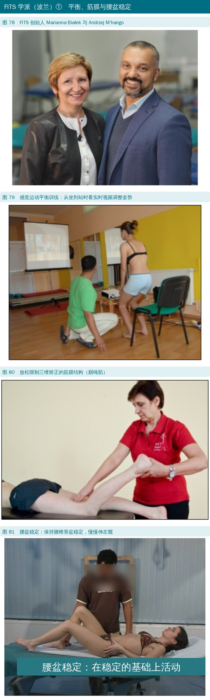
🔖平衡、筋膜与腰盆稳定
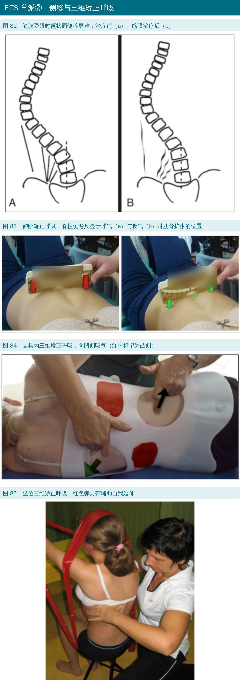
🔖侧移与三维矫正呼吸
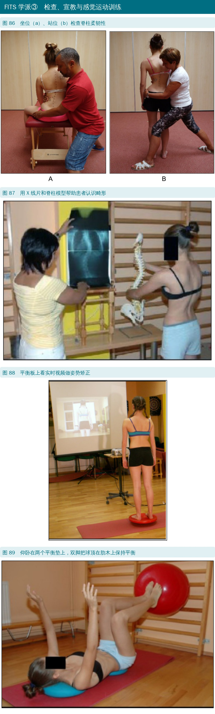
🔖检查、宣教与感觉运动训练
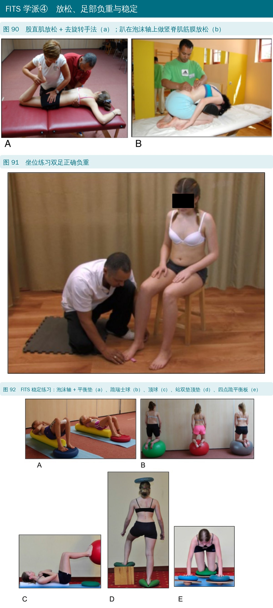
🔖放松、足部负重与稳定
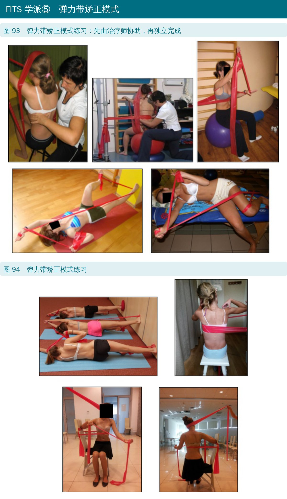
🔖弹力带矫正模式
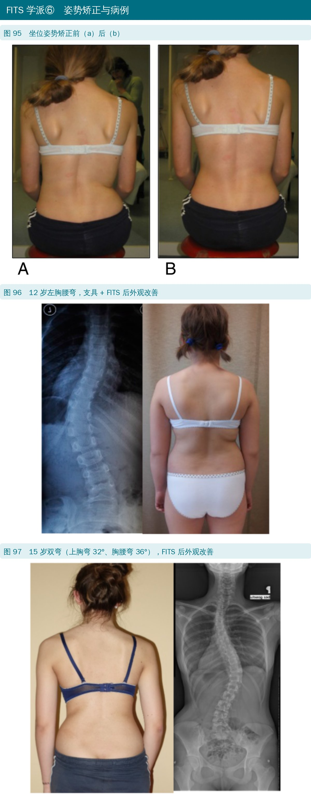
🔖姿势矫正与病例
证据：Białek 2011 年研究中，10°～25° 的单弯 50% 改善、46% 稳定；20°～45° 组改善和稳定的比例更低，作者认为应在 10°～25° 时就开始治疗。
• 这是各学派代表人物写自己方法的叙述性综述：没有检索方法，也没有横向比较疗效，自我宣传成分不可避免
• 多数学派的证据是病例系列和单中心研究，独立的随机对照试验主要集中在 Schroth 和 SEAS；Lyon 学派自己承认 <20° 时没有证据
• 图中多为个案“前后对比”照片，不能代表平均效果
• 侧移法证据主要来自 1985 年的回顾性观察和日本 39 人的研究
• 七个学派共同的三件事：三维自我矫正、日常生活中保持矫正、稳定矫正后的姿势，这是选练习时的底线
• 先分型、再选动作：Schroth 体块 / Rigo 分型适合系统学习；不熟悉时，侧移法的柔韧性分型（Ⅰ～Ⅲ型）简单好用
• 可以直接借用的“小工具”：SEAS 的四个自问（检验是否真的矫正）、侧移法的提踵（每天 30 次 × 10 秒）、Dobomed 的“休息”动作、FITS 的脊柱侧弯尺看呼吸
• PSSE 不替代支具：中重度、生长期进展快的患者，运动配合支具，并用运动帮助支具发挥矫正力
• 依从性比方法更重要：选患者能理解、在家能准确重复的动作
欢迎关注骨科康复小黄公众号，获取更多物理治疗的专业知识！
📄参考文献：
Berdishevsky H, Lebel VA, Bettany-Saltikov J, et al. Physiotherapy scoliosis-specific exercises – a comprehensive review of seven major schools. Scoliosis Spinal Disord. 2016;11:20. doi:10.1186/s13013-016-0076-9
原文以 CC BY 4.0 协议开放获取。本文为学术交流用的中文解读，图片引自原文图 1～97（英文标注已替换为中文，部分品牌字样已模糊，按学派重新拼版），对比表格为编者根据原文表 1 整理翻译。